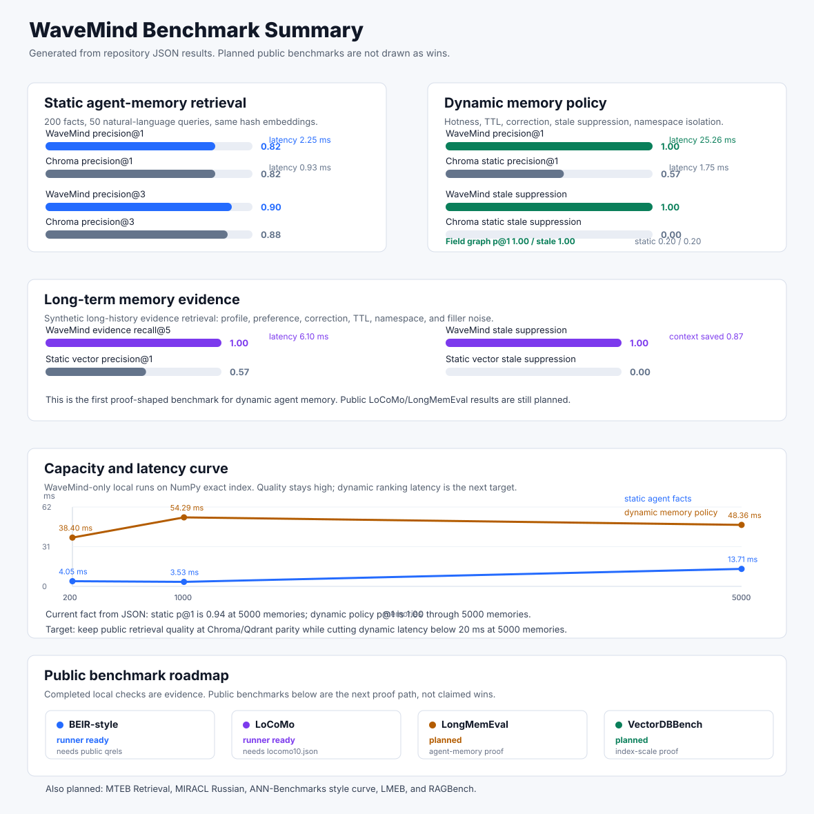

WaveMind Living Benchmark Dashboard
Generated from checked-in benchmark artifacts. Planned rows are not claimed wins; external service evidence is shown separately.
Readiness
pass39/39 criteria pass
Implemented
394 runner-ready and 6 planned public proof paths
Refresh
2026-07-15T00:57:04Zsource 025b8285cbf2
Visual Summary

Publication Contract
The leaderboard is generated from artifacts, freshness-checked, published to GitHub Pages, and claim-limited until strict production evidence passes.
| Status | pass |
|---|---|
| Weekly schedule | 17 4 * * 1 |
| Refresh profile | local |
| Pages URL | https://caspiang.github.io/wavemind/ |
| Source ref | 025b8285cbf2 |
| Workflow run | local or manual artifact |
Agent Impact
Behavioral evidence: task success, stale-fact suppression, context savings, long-memory retrieval, and checked-in answer-quality smoke results.
| Status | pass |
|---|---|
| Benchmarks | 6 |
| WaveMind wins | 6 |
| Average lift | 0.37 |
| Context saved | 0.719 |
| Stale safety | 1 |
| Best profile | agent-coherence-and-token-savings-wavemind |
Structured Memory
Typed memory evidence: image, audio, video, 3D, table, event, graph, external vectors, temporal recall, knowledge-graph traversal, provenance, and persistence.
Modalities: image, audio, table, event, video, 3d, graph
| Status | pass |
|---|---|
| Modalities | 7 |
| Gate checks | 26/26 |
| Structured precision@1 | 1 |
| Cross-modal precision@1 | 1 |
| Encoder health | True |
| Encoder query p95 | 1.515 ms |
| Temporal precision@1 | 1 |
| Graph precision@1 | 1 |
| Cross-modal avg latency | 4.715 ms |
Multimodal Admission
Production multimodal claims stay locked until real external image, audio, video, and 3D encoder evidence proves object-store persistence, cross-modal routing, provenance, latency, and error-rate thresholds.
| Status | plan_only |
|---|---|
| Admitted | false |
| Structured contract | pass |
| Requested evidence | action_required |
| Required artifact | benchmarks/multimodal_external_encoder_results.json |
| External modalities | 0 |
| External payloads | 0 |
| External queries | 0 |
| Object store |
Memory OS Intelligence
Worker evidence: hot-query prewarm, transition-learned predictive prefetch, priority learning, adaptive forgetting, concept consolidation, Redis coordination, and rollout admission boundaries.
| Status | pass |
|---|---|
| Gate checks | 39/39 |
| Hot queries | 2 |
| Prewarm warmed | 2 |
| Predictive warmed | 6 |
| Transition hit | True |
| Priority predictions | 2 |
| Forgetting demotions | 4 |
| Concepts created | 1 |
| Canary status | pass |
| Admission status | plan_only |
Cluster Autoscale
Cluster evidence: shard placement, autoscale planning, Kubernetes operator reconciliation, rebalance safety, active-active convergence, CRDT field state, and the deterministic 100M capacity envelope.
| Status | pass |
|---|---|
| Gate checks | 62/62 |
| Simulated memories | 1000000 |
| Namespaces | 4096 |
| Autoscale target | 10000000 |
| Required nodes | 50 |
| Operator replicas | 34 |
| 100M capacity nodes | 128 |
| 100M capacity zones | 8 |
| Recommended max replicas | 192 |
Strict Evidence Readiness
Operator runbook for the remaining remote, 10M, 50M, and 100M evidence gaps: safe dispatch commands, missing environment, promotion steps, strict validation, and locked claims.
Blockers: complete: 5, missing_env: 3
| Report status | pass |
|---|---|
| Readiness | action_required |
| Claim status | claims_limited |
| Requirements | 8 |
| Action required | 3 |
| Safe dispatch ready | 0 |
| Can auto-run now | 0 |
| Planned target memories | 180000000 |
Benchmark Leaderboard
| benchmark | category | primary metric | best WaveMind result | best baseline result | readout |
|---|---|---|---|---|---|
| Agent user-memory retrieval | agent-memory | precision@1 | WaveMind: 0.82 / 2.249 ms | Chroma: 0.82 / 0.933 ms | Quality tie; WaveMind slower |
| Agent coherence and token savings | agent-memory | task success | WaveMind: 0.917 / 2.647 ms | Static vector: 0.333 / 0.679 ms | WaveMind leads on quality |
| Dynamic memory policy | agent-memory | precision@1 | WaveMind: 1 / 3.918 ms | Chroma static: 0.571 / 1.662 ms | WaveMind leads on quality |
| Field memory graph dynamics | agent-memory | precision@1 | WaveMind graph: 1 / 0.332 ms | - | WaveMind-only check |
| WaveMind capacity curve | capacity | precision@1 | WaveMind dynamic capacity: 1 / 48.4 ms | - | WaveMind-only check |
| Long-term memory evidence | long-term-agent-memory | evidence recall@k | WaveMind: 1 / 6.103 ms | Static vector: 1 / 0.648 ms | Quality tie; WaveMind slower |
| BEIR-style open retrieval runner | retrieval | precision@1 | WaveMind: 0.24 / 117.0 ms | Chroma: 0.243 / 1.794 ms | Baseline leads on quality |
| NoMIRACL Russian retrieval | multilingual-retrieval | precision@1 | WaveMind: 0.41 / 10.2 ms | Chroma: 0.41 / 2.603 ms | Quality tie; WaveMind slower |
| LoCoMo evidence retrieval runner | long-term-conversation-memory | evidence recall@k | WaveMind sentence: 0.547 / 3.438 ms | Qdrant sentence: 0.409 / 124.3 ms | WaveMind leads on quality |
| LongMemEval evidence retrieval | long-term-agent-memory | evidence recall@k | WaveMind: 0.782 / 7.274 ms | Static vector: 0.52 / 0.083 ms | WaveMind leads on quality |
| LongMemEval evidence 50-query smoke | long-term-agent-memory | evidence recall@k | WaveMind: 0.92 / 15.3 ms | Static vector: 0.6 / 0.337 ms | WaveMind leads on quality |
| ANN index latency curve | index-latency | Recall@k | WaveMind numpy: 1 / 1.988 ms | Qdrant local: 1 / 33.8 ms | Quality tie; WaveMind faster |
| Production index profile | index-latency | Recall@k | WaveMind faiss-persisted: 1 / 3.524 ms | Qdrant service: 1 / 4.414 ms | Quality tie; WaveMind faster |
| Production pgvector tuning profile | index-latency | Recall@k | WaveMind pgvector-exact: 1 / 55.7 ms | Qdrant service: 1 / 9.137 ms | Quality tie; WaveMind slower |
| Production load profile 100k | production-scale | Recall@k | WaveMind pgvector: 0.736 / 17.8 ms | Qdrant service: 1 / 10.3 ms | Baseline leads on quality; production SLO pass: Qdrant service; cost: Qdrant service $1.39/1M queries |
| Production load profile 1M | production-scale | Recall@k | WaveMind faiss-persisted: 1 / 39.1 ms | Qdrant service: 0.984 / 82.6 ms | WaveMind leads on quality; production SLO needs scale: WaveMind faiss-persisted; cost: WaveMind faiss-persisted $4.17/1M queries |
| Qdrant 1M HNSW ef sweep | production-scale | Recall@k | - | hnsw_ef=2048: 0.977 / 64.8 ms | No WaveMind result; production SLO miss; cost if SLO fixed: hnsw_ef=512 $4.86/1M queries |
| Production streaming load runner | production-scale | Recall@k | 10k smoke / WaveMind numpy-streaming: 1 / 0.098 ms | Qdrant sharded smoke / Qdrant sharded service streaming: 1 / 9.103 ms | Quality tie; WaveMind faster; production SLO pass: 10k smoke / WaveMind numpy-streaming; cost: 10k smoke / WaveMind numpy-streaming $0.69/1M queries |
| Scale readiness profile | production-scale | precision@1 | WaveMind structured payloads: 1 / 1.959 ms | - | WaveMind-only check |
| Production readiness gate | production-scale | readiness score | WaveMind production readiness: 1 / - | - | WaveMind-only check |
| Memory competitor adapter profile | agent-memory | precision@1 | WaveMind: 0.8 / 14.5 ms | GraphRAG static graph: 0.852 / 0.079 ms | Baseline leads on quality |
| LongMemEval answer generation | long-term-agent-memory | token F1 | WaveMind + qwen2.5:1.5b: 0.333 / - | Chroma static + qwen2.5:1.5b: 0.17 / - | WaveMind leads on quality |
Evidence Source Status
| area | current source | claim status | next action |
|---|---|---|---|
| Artifact freshness | local matrix refresh at 2026-07-15T00:57:04Z | source 025b8285cbf2; audit gate enforced by validate_benchmark_artifacts.py | Keep weekly refresh green before public claims. |
| Serverless telemetry | loopback API pool; loopback-api-capacity-estimate; 4 measured replicas | observed SLO True; loopback evidence, not a managed-serverless claim | Run .github/workflows/serverless-observed-telemetry.yml against deployed API nodes. |
| External HTTP cluster load | kubernetes-kind-non-loopback-ci; kubernetes-pod-dns-physical-node-drill; 4 nodes | SLO True; non-loopback Kubernetes pod-DNS evidence | Run .github/workflows/external-http-cluster-load.yml with a remote node manifest. |
| External HTTP active-active loopback | local-loopback; loopback-api-regions; 3 regions | SLO True; external URL contract over local API regions | Run .github/workflows/external-http-active-active.yml with remote regions for production evidence. |
| External HTTP active-active | no checked-in remote region artifact | action required before remote active-active production claim | Run .github/workflows/external-http-active-active.yml with a remote region manifest. |
| pgvector tuning | real PostgreSQL/pgvector service profile at 50k vectors | iterative recall 0.97, iterative p99 55.2 ms; exact recall 1 | Promote pgvector-iterative into the 100k and 1M production load SLO profiles. |
| 10M streaming load | local WaveMind faiss-ivfpq-persisted streaming profile | target recall 0.99, p99 60.1 ms, SLO scale_required | Repeat at 50M and add service-backed Qdrant/pgvector 10M artifacts. |
| 50M streaming preflight | WaveMind faiss-ivfpq-persisted streaming plan-only contract | action_required; index 1.12 GB; app storage 119.2 GB; blockers missing_env:WAVEMIND_FAISS_IVFPQ_PATH, insufficient_local_disk_for_index_and_transient_batches | Run .github/workflows/production-streaming-load.yml with faiss-ivfpq-persisted and publish benchmarks/production_streaming_load_ivfpq_50m_results.json. |
| Qdrant streaming | real Qdrant service smoke plus measured 10M profile | smoke recall 1, smoke p99 17.9 ms; 10M recall 0.975, 10M p99 43.3 ms, SLO scale_required | Keep the measured 10M profile green and run the sharded Qdrant and pgvector 10M profiles next. |
| Qdrant sharded streaming | real fanout smoke plus measured four-service 10M profile | smoke recall 1, smoke p99 16.0 ms; 10M recall 0.993, 10M p99 71.3 ms, shards 4; 100M preflight action_required; planned shards 4; blockers none (measured artifact passes) | Keep the measured 10M sharded profile green and run the strict 100M sharded profile next. |
| Qdrant 1M streaming | real Qdrant service run before and after warmup/chunking tuning | cold p99 3014.0 ms; tuned recall 1, tuned p99 26.4 ms, SLO pass | Use the tuned warmup/chunking profile for the 10M Qdrant service run. |
| pgvector streaming | real PostgreSQL/pgvector service smoke plus 10M preflight | smoke recall 1, smoke p99 7.624 ms; 10M preflight action_required | Run .github/workflows/production-streaming-load.yml with pgvector-service against sized Postgres storage. |
| Production readiness gate | checked-in benchmark artifacts | pass; 39/39 pass | Keep the gate at readiness_score 1.0 while repeating larger service-backed runs and moving external competitor evidence into the separate adapter profile. |
| Competitor adapters | checked local adapters plus optional external services | configured 4; skipped Zep | Configure skipped external services before claiming full competitor coverage. |
Reading Rules
Quality wins and latency wins are separate. A row can lead on recall while still being slower.
WaveMind-only rows are regression and capacity checks, not competitor claims.
Production SLO rows use checked recall, p99, QPS, replica count, autoscaling, and cost assumptions.
Remote active-active, managed serverless, and live competitor rows stay marked as external evidence until real service artifacts are checked in.